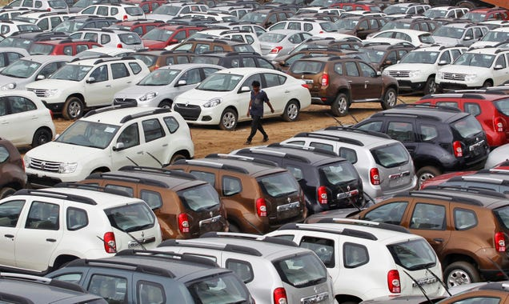

Indian Automobile Industry: Rising Inventories and Challenges Ahead

India's automobile industry has been a key driver of economic growth, employment generation, and technological advancement in the country. With steady growth in passenger vehicle sales over the past few years, the industry has been optimistic about the future. However, the recent trend of rising inventory levels at car dealerships poses a significant challenge to the industry's sustainability and profitability.
The Data and Trends
According to a report by Business Standard, the inventory levels of passenger vehicles at Indian car dealerships have reached 40-45 days as of May, despite a 4% increase in sales during the month. This is a significant jump from the inventory levels of 37-39 days in March and 39-41 days in April. The leading automobile manufacturer in India, Maruti Suzuki, has reported a rise in its inventory levels from 204,000 units on April 1 to 262,000 units on June 1. The company has attributed this to the faster growth of wholesale over retail.
The Reasons and Impact
The rising inventories in the Indian automobile industry are primarily due to the following factors:
- Unsold BS-IV vehicles: Prior to the implementation of the stricter Bharat Stage-VI emission norms from April 2020, many manufacturers had built up their inventory of BS-IV vehicles. However, the sudden and severe impact of COVID-19 on the industry disrupted their sales plans, leaving them with unsold inventory.
- Production backlog: The pandemic-induced lockdowns and supply chain disruptions led to production halts and delays. As the country gradually reopened, the manufacturers tried to make up for the lost time by increasing their production rates. However, this has resulted in a backlog of unsold vehicles, particularly in the rural and semi-urban areas where the demand has been slower to recover.
- Discounts and incentives: To clear their accumulated inventory, many manufacturers have been offering attractive discounts and incentives to the customers and dealerships. While this may boost the short-term sales, it can also harm the long-term profitability and brand value of the industry, as well as lead to higher levels of debts and liabilities.
The rising inventory levels can have several negative impacts on the industry:
- Increased carrying costs and storage expenses for the manufacturers and dealerships.
- Reduced cash flows and profits for the manufacturers, as they have to allocate their funds towards inventory management instead of R&D and innovation.
- Limited market expansion and saturation, as the inventory backlog reduces the need for new production and investment.
- Lowered consumer confidence and trust in the industry, as the presence of unsold inventory signals a lack of demand and value.
The Solutions and Strategies
The Indian automobile industry needs to adopt a multi-pronged approach to address the issue of rising inventories and boost its growth and resilience:
- Effective demand forecasting and planning: The manufacturers and dealerships need to improve their demand forecasting and planning techniques to prevent overproduction and underutilization of resources. This can involve leveraging data analytics, market intelligence, and customer insights to make informed and agile decisions.
- Strategic inventory management: The manufacturers and dealerships need to adopt innovative and cost-effective inventory management strategies to minimize their carrying costs and optimize their storage and transportation facilities. This can include implementing lean production, just-in-time inventory, and warehouse automation techniques.
- Diversification and innovation: The manufacturers need to diversify their product portfolio and invest in technological innovation to stay ahead of the competition and meet the evolving consumer demands. This can include developing electric and hybrid vehicles, connected car technologies, and sustainable mobility solutions.
Case Study: Hyundai Motor India
Hyundai Motor India, the second-largest passenger carmaker in India, has been able to maintain its inventory levels at 25-30 days, despite the industry-wide trend of rising inventories. This has been attributed to the company's agile and data-driven production planning, effective risk management, and strong dealer network. Hyundai has also been focusing on diversifying its product portfolio and introducing new technologies, such as the electric SUV Kona and the connected car platform BlueLink.
Case Study: Tata Motors
Tata Motors, the leading commercial vehicle manufacturer in India, has recently announced a new 'New Forever' business strategy that aims to transform the company from a traditional automobile manufacturer to a modern and agile mobility solutions provider. As part of this strategy, Tata Motors is focusing on electrification, connected mobility, and shared mobility solutions to cater to the changing consumer preferences and demands. The company is also streamlining its manufacturing and supply chain operations to improve efficiency and reduce costs.
Conclusion
The Indian automobile industry is facing a challenging phase as it grapples with rising inventory levels, production backlogs, and changing consumer demands. However, with the right strategies and interventions, the industry can overcome these challenges and emerge as a sustainable and innovative force. The industry needs to prioritize effective demand planning, cost-efficient inventory management, and strategic diversification and innovation to tap into the potential of the Indian market and compete on the global stage.
References:
- https://www.business-standard.com/article/companies/vehicle-retail-sales-up-in-may-yet-dealers-sitting-on-inventory-121060801216_1.html
- https://auto.economictimes.indiatimes.com/news/industry/stuck-at-dealerships-unsold-bs4-stock-to-go-for-export-to-clear-inventory/75981571
- https://auto.economictimes.indiatimes.com/news/industry/how-tata-motors-wants-to-teleport-itself-to-a-new-auto-era/82854837
Hashtags:
- #IndianAutomobileIndustry
- #PassengerVehicleSales
- #MarutiSuzuki
- #InventoryLevels
- #WholesaleVsRetail
- #DemandPlanning
- #InventoryManagement
- #Diversification
- #Innovation
- #NewForeverStrategy
Article Category:
Business/Economy/Automobile Industry
Curated by Team Akash.Mittal.Blog
Share on Twitter Share on LinkedIn